Before & after
Drag any slider to wipe between the "before" and the finished result. Every one of these is real work done across Santa Cruz, Monterey and San Benito Counties.


Full bathroom refresh — tub & vanity
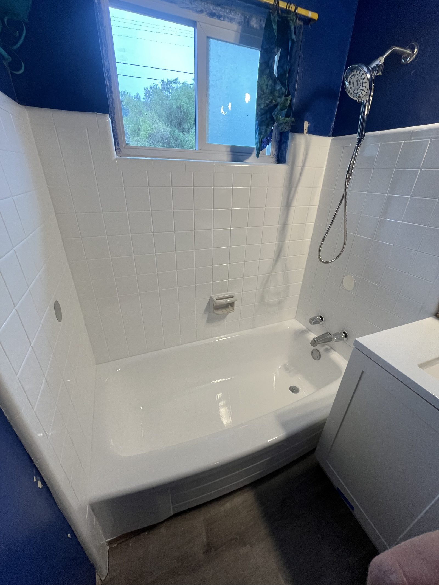
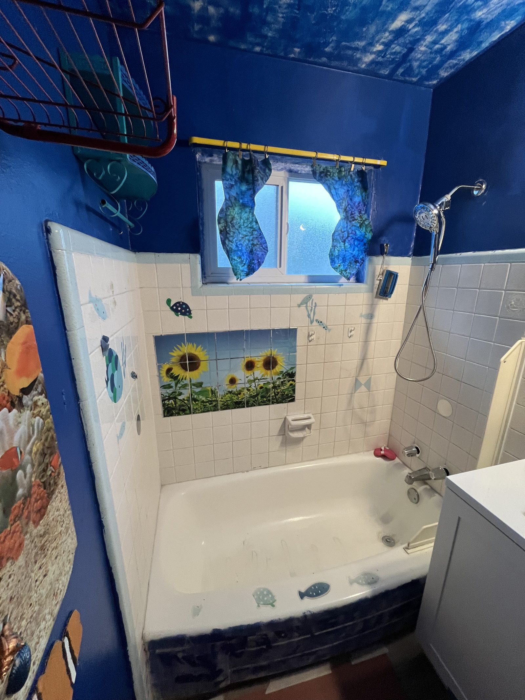
Bathtub & tile surround — resurfaced


Rust-stained kitchen sink — like new


Fiberglass shower stall — refinished in charcoal
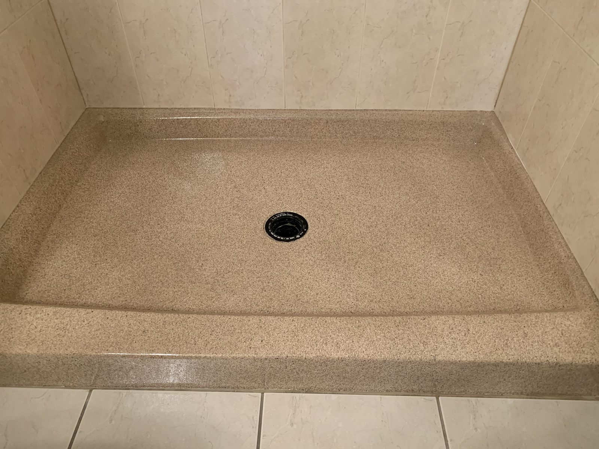
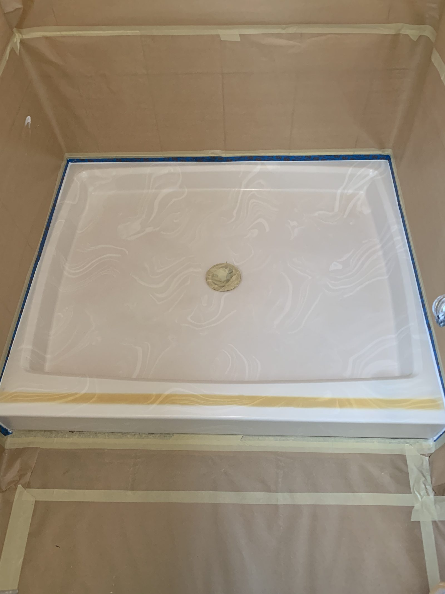
Shower pan — refinished stone-look floor
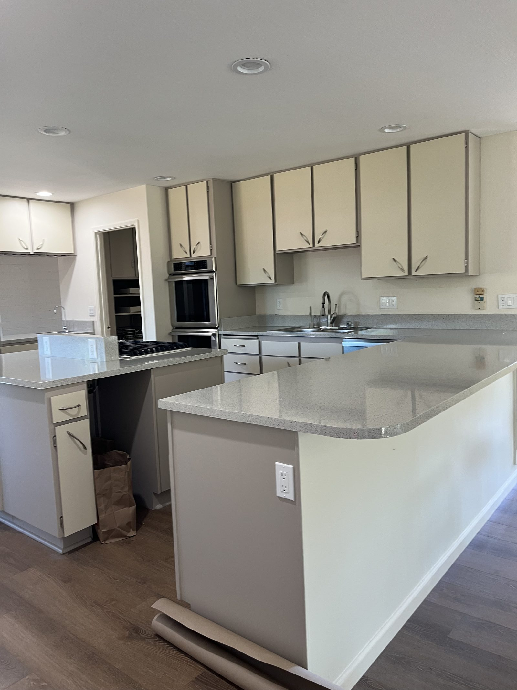
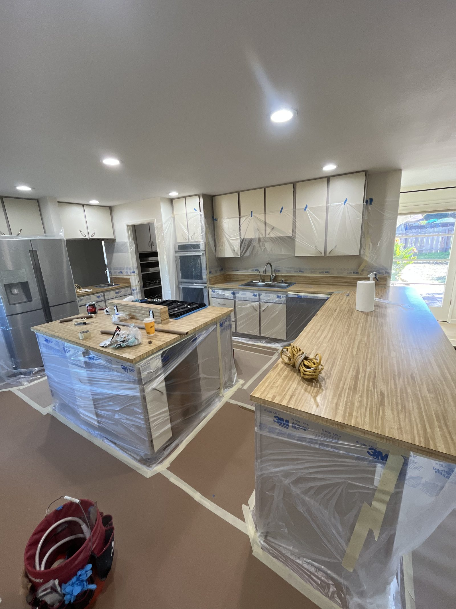
Kitchen island countertop — resurfaced
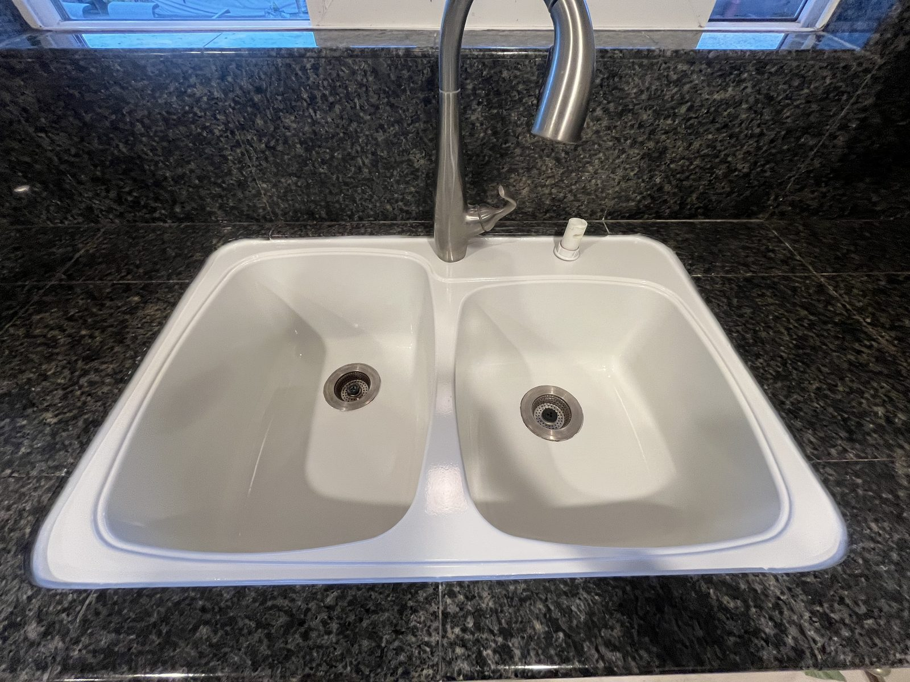
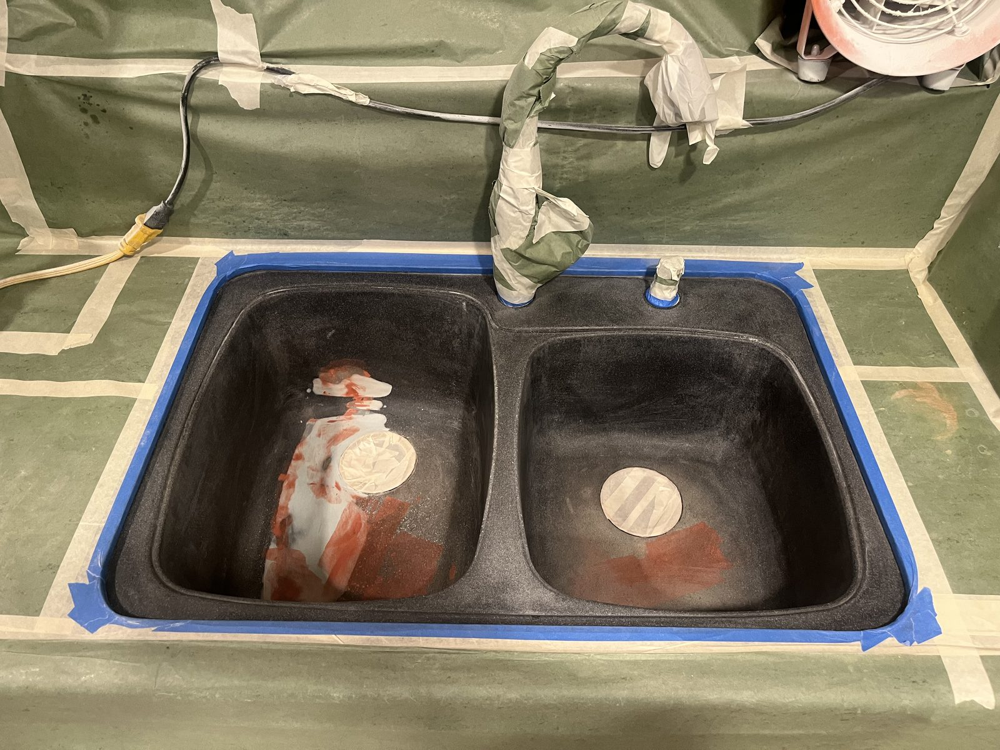
Double kitchen sink — refinished white
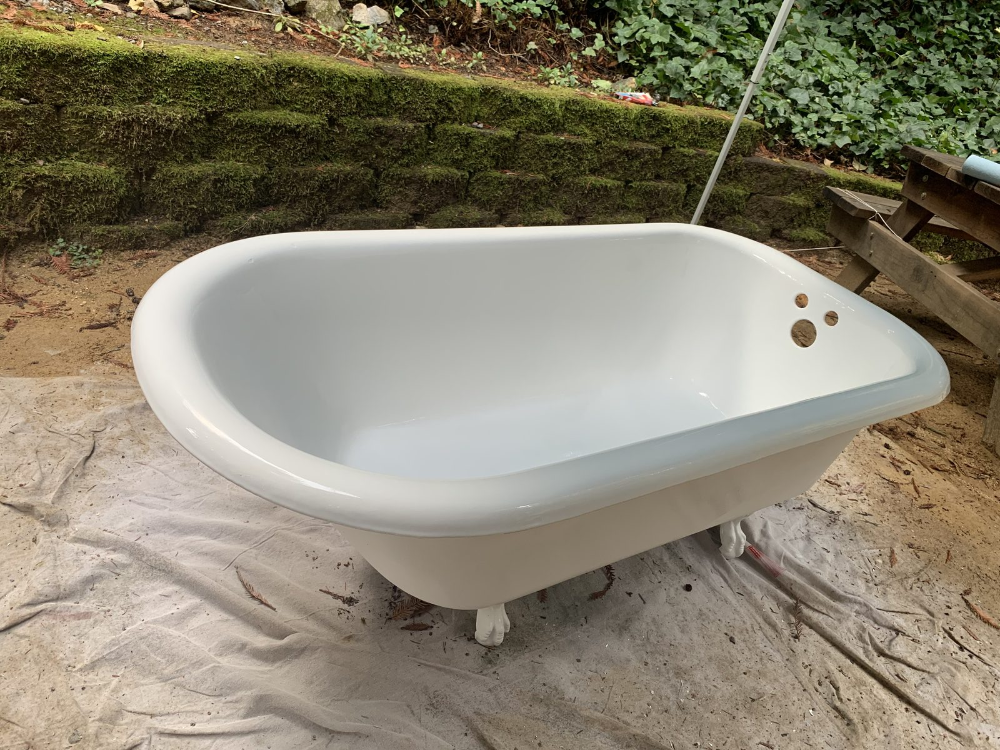
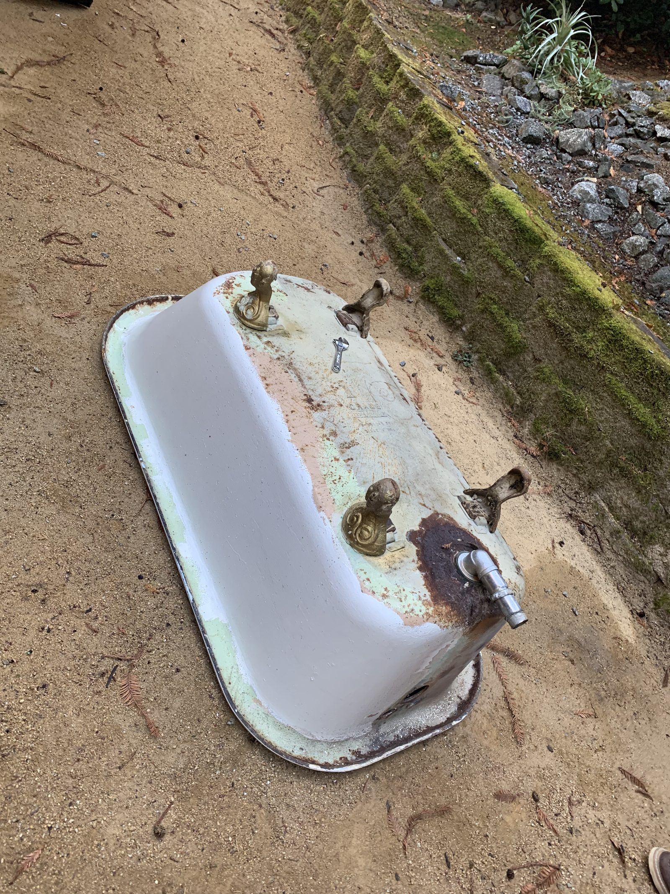
Cast-iron clawfoot tub — fully restored
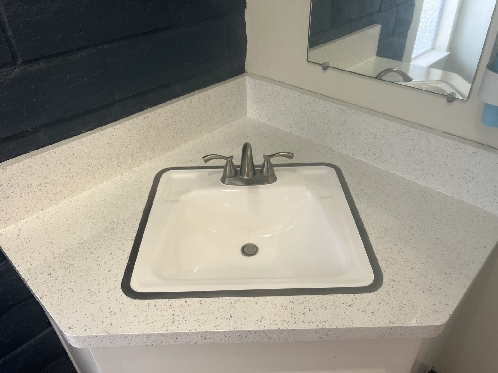
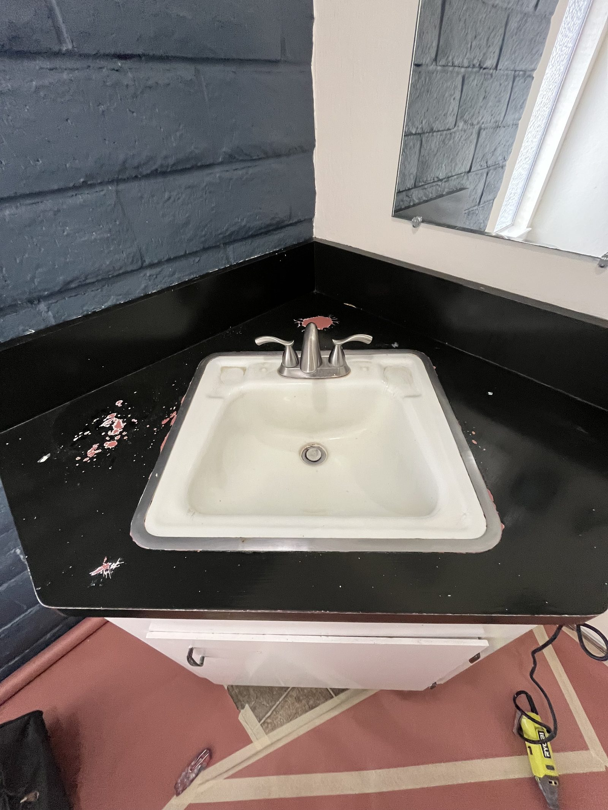
Corner sink & countertop — refinished
Finished results
Tap any photo to view it larger.
Picture yours on this page
Send Alex a photo of your tub, sink, countertop or shower and get a free quote.
Open Monday–Saturday, 8am–6pm